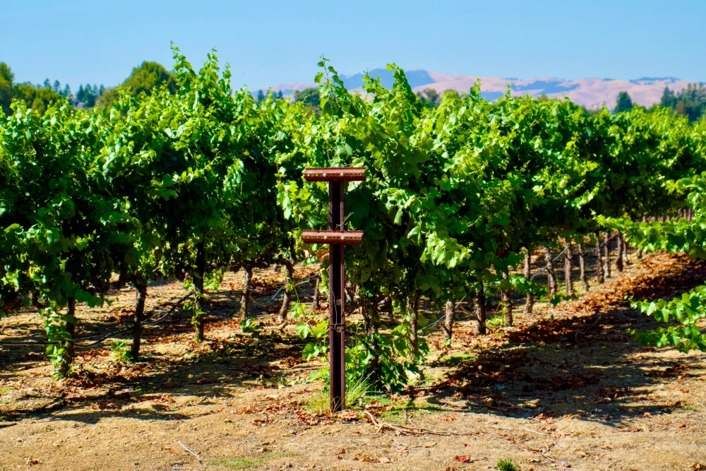

Kalifornien
2025-10-27
I Kalifornien görs mycket vin särskilt utav druvsorten Zinfandel men man odlar även andra druvor här som Pinot Noir, Cabernet Sauvignon, Shiraz, Chardonnay och Sauvignon Blanc. Kalifornien har medelhavsklimat med varma somrar och milda vintrar vilket gör det perfekt för vinodling. Man har Stilla havet på ena sidan och bergskedjor på andra vilket resulterar i dimbankar som när dom kommer in över landet kan resultera i kyligare temperaturer. Från början var det munkarna som odlade vin i Kalifornien på 1700-talet. Dom planterade sticklingar skickade från Europa. I Europa blev amerikanska viner mer eller mindre erkända efter en vinprovning som hölls 1976 i Paris och kallas för "The Judgement of Paris". Här vann de amerikanska vinerna första pris både i katergorierna rött och vitt vin.
Det finns fem stora vinregioner vilka är North Coast, Central Coast, South Coast, Central Valley och Sierra Foothills. Den största regionen är Central Valley här är temperaturen hög och det är nästan ökenklimat. I Central Valley gör man mestadels basviner. Bredvid ligger Sierra Foothills, området ligger precis nedanför Sierra Nevada och här är klimatet behagligare och svalare. I North Coast, norr om San Fransisco, görs huvuddelen av kvalitetsvin i områden som Sonoma och Napa Valley. Centrla Coast ligger mellan San Fransisco och Santa Barbara, här är det rätt varmt men här kommer det in mycket dimbankar från Stilla havet. South Coast ligger längst ner längs kusten av Kalifornien och här görs mycket vita viner av druvorna Riesling, Chardonnay och Sauvignon Blanc.
Här kommer tips på ett par amerikanska röda viner att prova under hösten/vintern:
- Apothic Red, 2022, Central Valley, 129:-fruktigt vin med fatkaraktär, inslag av plommon, vanilj, blåbär, mintchoklad och björnbär.
- Bread & Butter, 2023, North Coast, Napa Valley, 169:-kryddig smak med inslag av fat, skogshallon, jordgubbar, sandelträ, mjölkchoklad och kryddnejlika.
- Black Stallion, 2022, North Coast, Napa Valley, 389:-fruktig smak av plommon, svarta vinbär, mörk choklad, kokos, ceder, kaffe, fikon och vanilj.
- Seghesio, 2022, North Coast, Sonoma, 249:-fruktigt vin med fatkaraktär inslag av smaker som mynta, björnbär, plommon, hallon, kaffe, chokladpraliner och vanilj.
- District 7, 2023, Central Coast, Monterey, 149:-kryddig smak med inslag av körsbär, jordgubb, choklad, kardemumma, sötlakrits, hasselnötter och kaffe.
Eftersom hösten är här och snart julen också vill jag slå ett ord för att det är dags att putsa sina fönster innan det blir för kallt. Om man inte vill/orkar/kan göra det själv kan man alltid anlita en fönsterputsfirma. Bor man i södra Sverige kan jag tipsa om Fönsterputs Malmö.
Ha det så fint!